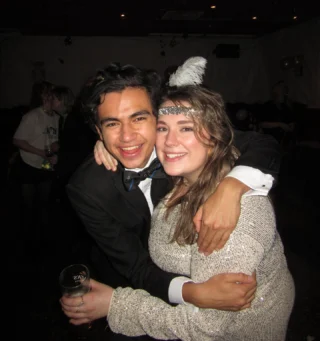

01
01
Ein Prosit!
Oktoberfest
Volle pullen, worst met sauerkraut, Dirndls en alleen de beste foute Duitse hits. Eén avond lang voelt Nijmegen verdacht veel als München.
Jaarlijks in novemberDamesgenootschap · N.S.V. Ovum Novum
Knettergek, duidelijk aanwezig en bovenal vriendinnen voor het leven. Wij maken van Nijmegen ons speelveld.

Oeps… geregeld!
Poes is een combinatie van heel verschillende vrouwen — en precies daarom werkt het.
De een wordt nét wat stoerder, de ander schreeuwt harder mee en weer een ander leert wanneer het tijd is voor rust. We dansen, borrelen, lachen om onszelf en beleven samen dingen die we alleen nooit hadden bedacht.
Iedere twee weken is het Poesavond. Maar eerlijk: voor een etentje, feestje, koffietje of spontaan avontuur is er altijd wel een Poes te vinden.
Ontmoet de PoezenVan pullen en polka tot feesten met impact. Twee avonden die je niet wilt missen.
01
Ein Prosit!
Volle pullen, worst met sauerkraut, Dirndls en alleen de beste foute Duitse hits. Eén avond lang voelt Nijmegen verdacht veel als München.
Jaarlijks in novemberFeest met impact
Feesten en tegelijk iets goeds doen. Eerdere edities steunden onder andere KWF, CliniClowns, Stichting Jarige Job en de Voedselbank Nijmegen.
Meer informatie 02
02
“We krijgen het altijd voor elkaar een combinatie van zeer verschillende vrouwen te zijn. Een combinatie die werkt.”
Nieuwe lichtingen, oude verhalen en één band die blijft. Bij Poes ben je nooit een nummer — wel af en toe de reden dat de avond ontspoort.

De verhalen, energie en vriendschap van Bianca en Myrna blijven voor altijd onderdeel van Poes. We dragen ze mee — op elk podium, op ieder avontuur en in alles wat we samen vieren.
Bianca · Myrna
Nieuwsgierig?
Wil je meer weten, samen borrelen of gewoon zien of het klikt? Slide in onze DM of stuur het bestuur een mail. Wij bijten alleen als het gezellig is.